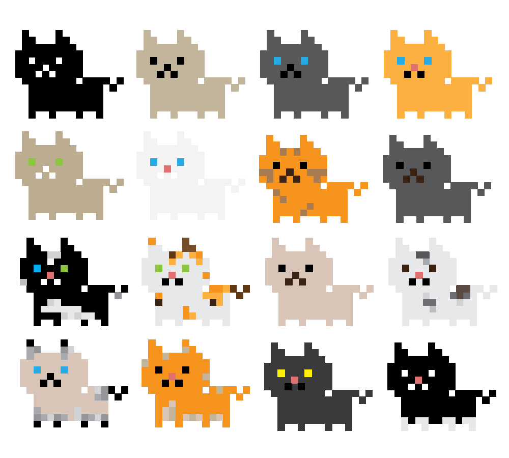
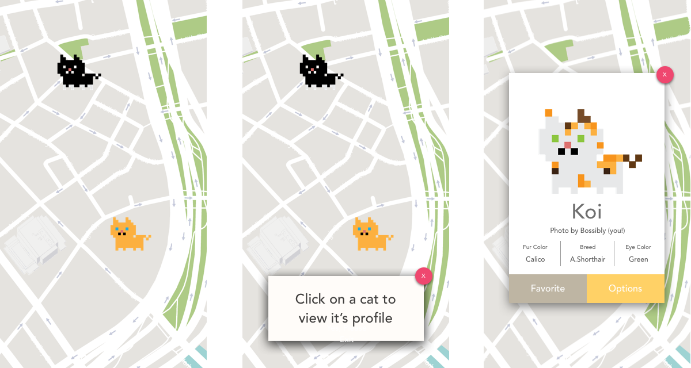

A geotagging application for street cats.
Check out new developments here!This application is based on a photo album I kept during my stay in Hong Kong. Because there were so many cats around, I tried to document them all by taking photos with my phone. I later thought, "it would be great if people collectively had photos of these cats geotagged so we knew about all of them" and that, my friends, was the best idea I had all year.
I hadn't thought to sketch out the actual UI of the application until an instructor of ours at SI asked us for one. He needed the idea to demonstrate how to use sketch for our class, and I thought it would be a perfect opportunity to build out this application. We had just learned how to use InVision and I realized that I could actually make a decent wireframe for this application.

I first decided to go for a "handdrawn" look for the application as a personal style choice, but I realized it would look too similar to neko atsume and many other cat-related applications on the market, so I quickly screpped this style.
I'm decided to move away from that and switching to pixel graphics instead to bring a gaming element to the app, but we may move it to another direction in the future. The current prototype simply uses google material design.
Determining what I wanted for the UI/UX was a bit tougher once I was trying to translate the sketches into actual wireframes in Sketch. Design decisions which particularly stood out include the following:

Should users should able to add cats to the application at any time or if cats should be approved by a moderator first?
This decision was by far the toughest one I had to weigh on because it basically determined if this app would be more like a game (like Pokemon Go) or a community where you can tag cats (like Instagram's geotagging functionality). I ultimately decided that for my own sanity, the cats displayed on the map must be approved by a moderator beforehand. Having anyone be able to tag any cat available seemed to be something that would be too overwhelming for the first iteration of the application. Another avenue I was exploring was to have users add friends to the application, and set permissions where only friends can see each other's cats on the app. I vetoed this option as I assumed it could alienate some users (i.e. the app won't be any fun unless you have friends, and who has friends?!).

Is having a Cancel/Exit/No button on the bottom as well as an 'x' button on the modals redundant?
At first I was going to leave it on so that users can have multiple ways to exit the page, but after speaking to a couple of UI designers, I realized it would be redundant, so the exit/cancel buttons were removed for the modals, but kept in other areas, such as the login screen, or where the x button can be used for a "cancel" versus a "no" button.
Should I list the Breeds and Colors alphabetically or by how common they are?
For Colors, it seemed to make more sense to list them alphabetically, as your typical user would know what colors are available. However, when it came to Breeds, I struggled if they should be listed alphabetically or by the rarity of the breed. I ultimately decided to list it alphabetically for consistency. (Also, while we are looking at these screens I wonder if it is apparent that there are more options beyond the ones shown, maybe a scrollbar will help?)
My friend Kenny, a full stack developer, is working on making a prototype for the application based on my wireframes, I'm excited to work with him to make this a real thing!:)